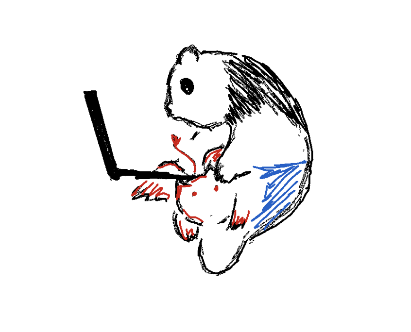

дні маленької панди і маленького, маленького дракона

передай привіт балкану!

Осінь — це друге весна, коли кожен листок — квітка.

А зазвичай... Анна зайнята своїм графіком.
Осіннє листя не падає, воно летить. Вони не поспішають, щоб знайти свій дім.

Ми разом піднімаємося до вершин

Інколи дракон буває збентежений
Іноді панда хоче знайти дракона

Сонний дракон, спи, спи, спи

дракон може часто злитися на панду

дракону потрібно часто заряджати акумулятор
У серці Балтимора дракон грався,
Де прикраси сяють і блищить дощик,
Приховано секрет, чи не так?